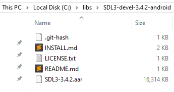

SDL3 for Android: 2D Graphics with SDL_Renderer SDL3 для Android: 2D-графика через SDL_Renderer
A guide to setting up, building, and installing an SDL3 project on an Android device. Руководство по настройке, сборке и установке проекта SDL3 на Android-устройство.
If you haven't set up your environment (Android SDK, NDK, JDK), follow the
Если у вас не установлены Android SDK, NDK, JDK и т.д., сделайте это по инструкции:
Environment Setup Guide
Установка Android SDK, NDK, JDK, CMake
Download the AAR library 1. Загрузка примеров
- Download the Android development binaries (AAR) - specifically SDL3-devel-3.4.4-android.zip - from the official SDL3 release page Скачайте файлы для разработки под Android (AAR): SDL3-devel-3.4.0-android.zip.
- Move SDL3-devel-3.4.4-android.zip to the C:/libs folder (or your preferred directory)
-
Extract the ZIP file into a folder named SDL3-devel-3.4.4-android

Download a Template 1. Загрузка примеров
- Download the SDL3 Renderer Example (displays squares on touch). If the previous repository is unavailable, please use my fork: link Скачайте пример с SDL3 Renderer API (рисует квадраты при касании).
- Extract it to a folder of your choice
- Open this folder in your preferred code editor (e.g., Sublime Text 4, Notepad++, etc.)
Project Configuration in the "android-project/app/build.gradle" file 2. Конфигурация проекта
- Open this file android-project/app/build.gradle
- Open the android-project/app/build.gradle file. It looks like this:
dependencies {
implementation files('libs/SDL3-3.2.22.aar')
implementation files('libs/SDL3_image-3.2.4.aar')
/* Use [create-prefab-aar.py](https://gist.github.com/madebr/3563a41ec9d287b6754c5fe764f56a1c)
* to creat a Android prefab archive for Box2D.
*/
//implementation files('libs/box2d-3.2.0.aar')
implementation 'androidx.appcompat:appcompat:1.5.1'
}dependencies {
implementation files('C:/libs/SDL3-devel-3.4.2-android/SDL3-3.4.2.aar')
/* Use [create-prefab-aar.py](https://gist.github.com/madebr/3563a41ec9d287b6754c5fe764f56a1c)
* to creat a Android prefab archive for Box2D.
*/
//implementation files('libs/box2d-3.2.0.aar')
implementation 'androidx.appcompat:appcompat:1.5.1'
}
externalNativeBuild {
cmake {
arguments '-DANDROID_STL=c++_shared', '-DWITH_IMAGE=ON', '-DWITH_MIXER=OFF', '-DWITH_NET=OFF', '-DWITH_BOX2D=OFF'
abiFilters 'armeabi-v7a', 'arm64-v8a', 'x86', 'x86_64'
// abiFilters 'arm64-v8a'
}
} externalNativeBuild {
cmake {
arguments '-DANDROID_STL=c++_shared', '-DWITH_IMAGE=OFF', '-DWITH_MIXER=OFF', '-DWITH_NET=OFF', '-DWITH_BOX2D=OFF'
abiFilters 'armeabi-v7a', 'arm64-v8a', 'x86', 'x86_64'
// abiFilters 'arm64-v8a'
}
} externalNativeBuild {
cmake {
arguments '-DANDROID_STL=c++_shared', '-DWITH_IMAGE=OFF', '-DWITH_MIXER=OFF', '-DWITH_NET=OFF', '-DWITH_BOX2D=OFF'
// abiFilters 'armeabi-v7a', 'arm64-v8a', 'x86', 'x86_64'
abiFilters 'arm64-v8a'
}
}Build and Deploy 3. Сборка и развертывание
Open a terminal in the android-project and run the following commands: Откройте терминал в корне проекта и выполните следующие команды:
Step 1: Compile
gradlew assembleDebugStep 2: Install (use the second terminal for this)
cd app/build/outputs/apk/debugadb install -r app-debug.apkChanging a code a rebuild
- You can change something in the src/main.c file (for example, a background color)
- Switch to the first terminal and press the up arrow key to select the gradlew assembleDebug. Press Enter to build a project
- switch to the second terminal and press the up arrow key to select the adb install -r app-debug.apk. Press Enter to build a project